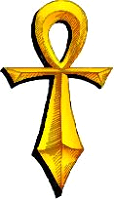

CHAPTER VTRANSPORTATIONThroughout the centuries most travel has been accomplished by use of the feet. While this method lends itself to scenic hikes, it is a terribly slow way to journey from one end of a huge continent to the other. Getting around Britannia, which may never be without risk, could soon become easier. Under the auspices of Lord British, studies of the properties of the Moon gates are beginning to yield a clearer understanding of the Gates' mystical workings. People forecast that future citizens will use these gates as a normal means of distant travel. The destinations of the gates appear to be rigidly bound to the phases of the twin moons Trammel and Felucca. The appearance and disappearance of the gates are definitely so linked. The location of the gates are represented on most maps of the realm as phases of the moons. The gate active is indicated by the phase of the moon Trammel. Once a gate is entered, thy destination is indicated by the phase of the moon Felucca. Britannia is marked by six terrain types, each with their own features: GRASS. The smoothest and easiest to travel on, the grass of Britannia serves to fatten its herds. One may pass here without any impediment. BRUSH. Low scrub growth and bushes hinder thy progress, permitting thy party to move but at three quarters of thy normal speed. Fine tinder for campfires may be found at the base of the larger shrubs. FOREST. The going is slow through dense woods, with thy speed cut fully in half. The oak so dearly loved by the Druids predominates here, along with healthy growths of Ash and Beech. There is quite a lack of visibility in the forest regions. HILLS. Hilly terrain, much favored by those who raise sheep, will slow thee down considerably, so much so that none but the sure-footed mountain goat can move at more than a snail's pace. MARSH. The marshes and fens are particularly treacherous and should be avoided at all costs. While progress is only slowed to half one's normal pace by the muck underfoot, the marshes give off poisonous gasses which can severely harm members of the party. MOUNTAINS. Mountaineering is not a well-known skill in Britannia, so the mountains are closed to the normal travelLer. There is also a lack of visibility over the mountains. Horses may be obtained and greatly speed travel on land. The sages of the Lycaeum are reputed to have been working on a lighter-than-air device for Lord British, but it was stolen some months ago and its whereabouts is not known. Since while travelling, thy party members' hit points may be diminished by unexpected confrontations, every so often thou should Hole up for the night and camp. If thy rest is not interrupted by wandering creatures, then thy party will by greatly refreshed.
At sea, masterful control of thy ship is necessary for survival. Ships have powerful cannons, but they can only fire broadside. To learn seamanship, thou must understand the ways of the water and the wind. The ocean is made up of three types of water: Large waves mark deep water; small waves indicate shallow water; tight ripples show where lie shoals, too shallow for ships to pass over. Remember that a change in wave size signals approaching land. This will aid thy navigation. The winds of Britannia blow very constant in a given direction, then shift to a new direction for another long period. This fact allows the skipper of a ship to sail strategically. If the ship is facing into the direction of the wind, (such as sailing East against an East wind) then the ship's progress is at its slowest -- 1/4 Speed. If the ship is sailing with the wind, (as in sailing West with an East wind behind thee) then the ship's speed is faster -- 3/4 Speed. It is only when one tacks across the wind that the ship reaches maximum speed, (such as sailing North or South against an East wind) -- Full Speed. Strive to maneuver thy ship so as to bring either the port or starboard batteries to bear before creatures or pirates can close and try to board. Thy ship has armour which, if reduced to zero, will cause it to sink and thy party shall perish. A captured pirate ship can be used in place of a badly damaged ship. Practice near shore until thou develop seafaring legs. The ship's cannons also serve for firing upon land-bound creatures. Beware, some of the land creatures have the power of flight and can pursue thee over the waves! 
|